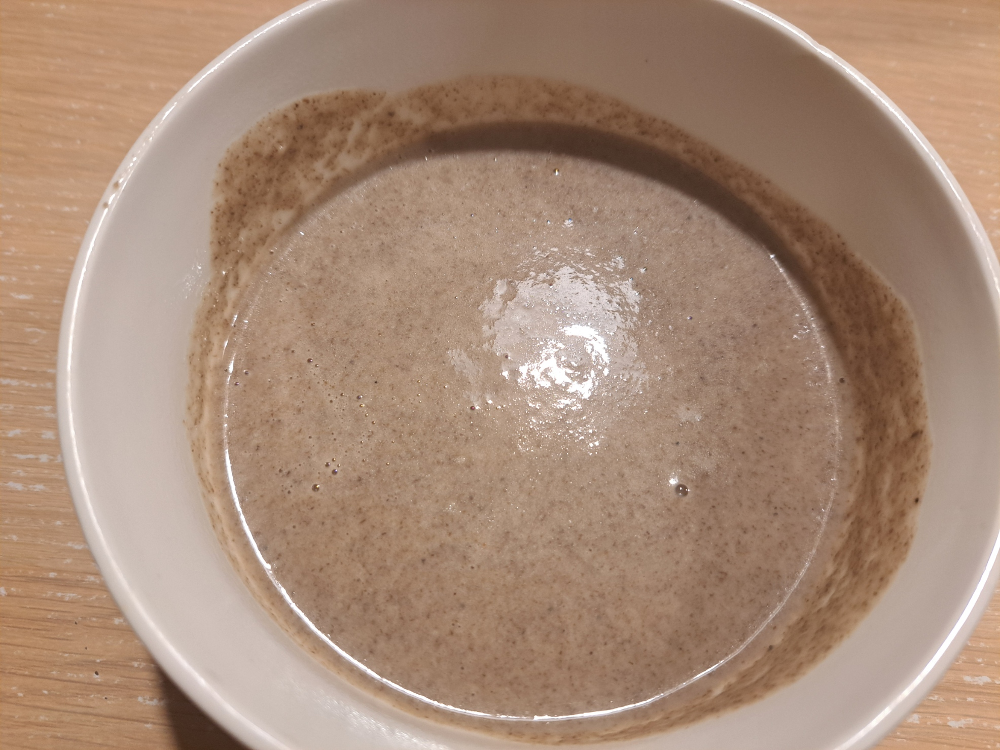

Mushroom Soup (Soupe de champignons)

Instructions
1
Sauté the vegetables
In a large pot or cocotte, melt some butter and sauté the sliced mushrooms, peeled and diced potatoes, minced onion, and minced garlic.
2
Sweat the mushrooms
Let them cook for a few minutes to allow the mushrooms to release their juices, stirring well.
3
Simmer
Add enough water to just cover the vegetables. Bring to a simmer over low heat, stirring occasionally.
4
Season
Add salt, pepper, a pinch of nutmeg, chopped parsley, and the crumbled bouillon cube.
5
Finish and Blend
Once the vegetables are tender, stir in the cream. Use an immersion blender to mix the soup until smooth.
6
Serve
Serve hot, optionally with some fresh crusty bread.